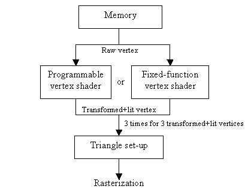
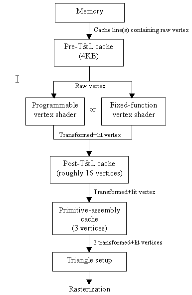
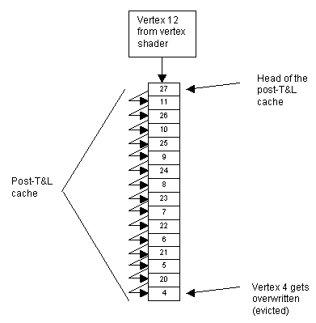
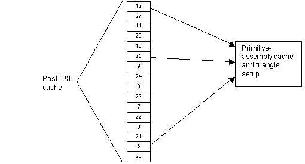
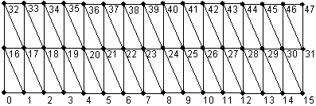
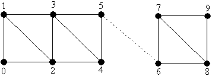

By Mike Abrash
Last night, my daughter asked me if I could take her to Borders to get a Connie Willis book. One of the longest-standing rules in our house is that reading is good, and any book she wants we'll get for her, so we set off for the store.
Now, I knew that Christmas was only four days away, but I hadn't really considered the implications, which turned out to be dire, to say the least. The line from the cash registers stretched back past Literature and History all the way into Social Sciences—more than 100 feet in all. They had all the cash registers going, but unfortunately that only amounted to four or five all told. So my daughter picked out her book, then browsed around the store while I waited in line. And waited. And waited. At least I got to read the first part of her book, which wasn't bad.
And so we learn something about bottlenecks. All the books in the world wouldn't have enabled Borders to handle any more customers, but one more register would have made a huge difference. The secret to performance is putting resources in the right place to ease the bottlenecks—which is a very appropriate way to kick off a discussion of data flow through the T&L pipeline. The T&L pipeline bristles with potential bottlenecks—and also with caches that, properly applied, shrink those bottlenecks almost magically.
And with that, onward to T&L pipeline data flow and a variety of associated performance issues!
The graphics pipeline in the Xbox® video game console from Microsoft consists of two primary parts. The first part fetches vertices, transforms and lights them, and sets up triangles to be drawn; the second part rasterizes those triangles. This paper discusses data flow through the first part of the pipeline and performance issues associated with that data flow. One interesting aspect of this discussion is why tristrips are generally a better performance choice than trilists, even in the case where trilists are organized to draw vertices in the same order as tristrips.
Before we begin, I'd like to point out that the information in this paper is a best-effort description based on the design of the Xbox GPU, but since the final hardware doesn't yet exist, the information is subject to change.
Functionally, the T&L part of the pipeline looks like this:

Viewed this way, the T&L pipeline is pretty simple. Vertices are fetched from memory, transformed and lit by either the programmable or the fixed-function vertex shader, and then assembled into triangles for rasterization. Of course, there's plenty of potential complication in how the programmable vertex shader is programmed or how the fixed-function vertex shader is configured, but those are discussed elsewhere; here we're going to treat the vertex shader as just a black box that accepts a raw object-space vertex and emits a transformed and lit vertex.
The problem with the straightforward view of the pipeline diagrammed above is performance. It's expensive to fetch vertices from memory; at a 200-MHz memory clock, a vertex takes a minimum of 10 ns to fetch, and can easily take much more depending on page locality and contention with other bus masters. Considering that tens of millions of triangles can be drawn per second, vertex fetching can easily be a limiting performance factor.
Depending on the vertex shader in effect, it can be even more expensive to shade vertices than to fetch them—often considerably more. A vertex shader program can take up to 64 GPU clocks—256 ns at a 250-MHz GPU clock—to run, and while that's an extreme case, just a few lights and a few textures can quickly add up to 10 to 20 clocks (40–80 ns) or more, and even one infinite light and two textures is 6 clocks (24 ns).
As it happens, each vertex is often used multiple times; in fact, each vertex can be used in as many as six different triangles, on average, depending on mesh layout. This means that there is considerable opportunity to improve performance via caching. The T&L pipeline sports not one but three caches for this very purpose, as follows:

Each stage up to the primitive-assembly cache processes one vertex at a time, but the primitive-assembly cache gathers up the three vertices of each triangle to be drawn, and then outputs them as a set to the rasterization part of the pipeline. (That's not quite how the hardware internals work, but conceptually it's individual vertices that travel through the T&L pipeline up to the primitive-assembly cache, and triangles—defined by three vertices—that travel from the primitive-assembly cache to triangle setup.)
Note that the T&L pipeline (the whole GPU pipeline, for that matter) is highly pipelined (no pun intended)—that is, the various units in the pipeline coprocess in parallel. Thus, the latency of the pipeline—the time a single vertex or triangle takes to get from one end to the other—is the sum of the times taken by the various units (memory fetching, vertex shading, triangle setup, etc.), but the throughput of the pipeline—the rate at which it can process vertices and triangles—is determined by the slowest unit only. In other words, the effective performance of the pipeline is not additive, but rather determined by a max() function of the performance of the various units. Thus, if triangle setup takes 2 clocks and a 2-clock vertex shader is in use, one tristrip triangle can be processed every 2 clocks, not every 4.
You might think that this sophisticated caching means that data flow through the T&L pipeline is automatically optimized, so programmers don't have to worry about this aspect of performance, but it turns out that quite the opposite is true. To a much greater extent than a CPU cache, the effectiveness of the T&L pipeline caches is highly dependent on data layout and organization. Consequently, you must take considerable care in assembling meshes in order to get the best performance out of the T&L pipeline.
Microsoft has developed mesh optimization code (provided in the XDK) that does a good job of optimizing meshes for the T&L caches, and we suggest you use that code, or at least start with it (source is included). Nonetheless, next we'll discuss the detailed care and feeding of the T&L caches, for several reasons: to help you understand what the mesh optimizer does and the best sorts of meshes to feed it; to enable you to optimize meshes on your own or enhance the Microsoft mesh optimizer, should that be necessary; and to help you understand the performance of your meshes.
The T&L performance story starts when a vertex gets fetched from memory. The first factor that affects performance is how much memory has to be fetched—less is better. Thus, minimizing vertex size via vertex compression and vertex shader attribute generation (such as texgen) is a good idea (although you'll have to weigh the extra clocks required for complex vertex shaders against the gain from fetching fewer bytes).
One thing that actually doesn't automatically help reduce memory fetches, although you might think that it would, is the use of indexed primitives. While these do have smaller footprints than equivalent non-indexed vertex streams, because only one instance of each vertex is needed, without caching they would still require just as many vertex fetches as non-index primitives, with each vertex being fetched from memory every time its index came up. Even with caching, poor index ordering can result in each vertex being fetched up to six times on average. In fact, because of the extra memory accesses required to fetch the indices, in the worst case, an indexed primitive can actually require more bandwidth than a non-indexed primitive. So while indexed primitives can indeed reduce memory fetching a great deal, because they make it possible to load each vertex only once, they do so only when used properly, as discussed below.
The next factor that affects performance is whether the vertex is in an open page. (See "Xbox Memory Architecture" for a discussion of memory performance and pages.) As you'd expect, page hits are much faster than page misses, so you should try to group your vertices and order your indices so that page boundaries are crossed as infrequently as possible. Ideally, of course, vertex fetching would proceed sequentially through memory. This seems impossible, because each vertex is typically needed for several triangles; as we'll see shortly, however, the pre-T&L cache, by eliminating the need to refetch most vertices, makes it possible to approach the ideal of sequential fetching.
Note that page locality is not an issue for non-indexed primitives; since they're read sequentially, their page locality is excellent. Unfortunately, that locality comes at the expense of a much larger memory footprint and of much poorer caching—without indices, tristrips can't share vertices between more than three triangles and trilists can't share vertices between triangles at all. This means that indexed primitives are mandatory for high performance.
Finally, there's the question of whether any particular vertex sizes and alignments are best. As it turns out, this is only an issue for accesses that jump around memory a lot; sequential accesses, or accesses with good locality, will require only a minimum number of memory accesses regardless of vertex size and alignment, thanks to the pre-T&L cache (discussed below).
If your vertex fetches do skip around memory (which we strongly recommend you avoid if at all possible), you will get better results if you can squeeze your vertices down to the next power-of-two, and align them correspondingly, to maximize the efficiency of the pre-T&L cache (and, of course, shrinking vertices helps reduce bandwidth, as well).
One other handy trick is that if your vertices have components that aren't used most of the time (like a second set of texture coordinates that are used only when there's damage to show, or for special effects), you can place them in a separate input stream, so they don't waste bandwidth when they're not needed.
So the takeaways here are: keep your vertices small, use indexed primitives, and keep successive vertex fetches close together—preferably sequential—in memory in order to minimize page misses.
The pre-T&L cache is a standard memory cache, similar to a CPU cache except that it only handles reads, not writes. It's 4 KB, 4-way set associative, with 128 32-B cache lines. This cache is why vertex size and alignment aren't important (apart from the normal bandwidth considerations associated with size) if the vertices are fetched sequentially or with good locality; in such cases, the pre-T&L cache simply retains any excess bytes fetched along with any one vertex for the short time until they're needed by another vertex, so no extra memory accesses are needed, even for vertices that span cache-line boundaries.
The pre-T&L cache makes it possible to lay out indices and meshes so that actual memory requests for vertices are nearly sequential. In other words, if your indices go like this:
0, 1, 2, 3, 4, 5, 1, 3, 5, 6, ...
1, 3, and 5 will be in the pre-T&L cache the second time they're used, so the actual set of requests to memory will be sequential:
0, 1, 2, 3, 4, 5, 6, ...
Note that this is not a particularly large cache; if 32-B vertices are used, for example, a maximum of 128 vertices can be cached (and quite possibly considerably fewer, depending on how the layout of the vertices in memory maps to the cache lines). Therefore, despite the undeniable benefits of the pre-T&L cache, vertex ordering in memory and the order in which indices are used should still be structured to minimize the extent to which vertex fetching jumps around memory, and to maximize locality.
The pre-T&L cache is a straight memory cache and has no knowledge of renderstate changes or starting and stopping of primitives. Therefore it persists between primitives and across state changes. In fact, it persists across everything; it doesn't even know when main memory has changed underneath it, so cache lines can be stale if this happens. To avoid it, the driver must invalidate the entire pre-T&L cache whenever such a possibility exists. Thus, the pre-T&L cache is invalidated each time a vertex buffer is unlocked. This is a good argument in favor of switching between vertex buffers and changing the contents of any given vertex buffer as infrequently as possible. It is certainly the case that if you use a vertex buffer, then change even one vertex in that buffer, and draw some more, the entire pre-T&L cache will have to be flushed.
Note that only cache lines containing data that is actually used by the shader are fetched. Thus, if you have 64-B vertices, aligned to 64-B boundaries, but the shader uses only the position stored in the first 12 B of each vertex, only one 32-B cache line will be fetched per vertex. This is in contrast to the two cache lines that would be fetched if the shader also used, say, texture coordinates stored in the last 8 B of the vertex, or, of course, if the shader used all 64 B.
As mentioned above, this paper will treat both the programmable vertex shader and the fixed-function vertex shader as black boxes that take in raw vertex data from memory and emit transformed and lit vertices, complete with all attributes needed for rasterization. However, it is worth keeping in mind that the number of clocks a shader takes can vary by as much as ten times or more, so the way in which the vertex shader is set up can greatly affect the relative performance balance between the front end of the T&L pipeline—memory fetching and the pre-T&L cache—and the later parts of the pipeline, which we'll discuss next.
With a slow vertex shader—say a 40-instruction shader program that handles several lights and some texcoord generation, and takes 20 clocks (80 ns)—memory fetch time is a relatively minor part of performance, since even a page miss every vertex wouldn't take as long as 80 ns. (Note, however, that since vertex fetching can steal bandwidth from other memory clients, it's a good idea to minimize vertex-fetching cost—via effective pre-T&L caching—even with a slow vertex shader.) With a fast vertex shader, though—and they can get as fast as 2 clocks (8 ns)—efficient vertex fetching just is as critical to maximizing performance as post-T&L processing. This can be useful to keep in mind when analyzing mesh rendering performance.
One note on vertex shader performance: there are actually two programmable vertex-shading units in the GPU, each capable of executing one instruction per clock at 250 MHz. The units run in parallel, so the effective throughput of the programmable vertex shader is two instructions per clock, or one-half clock per instruction.
The fixed-function vertex shader is organized quite a bit differently from the programmable vertex shader, consisting of two transform units, together with one lighting unit. It does not use any of the programmable vertex shader's instruction memory (with the sole exception of FVF_XYZRHW, which uses the first D3DVS_XBOX_RESERVEDXYZRHWSLOTS slots of instruction memory), although it does use some of the negative-index constant registers. The transform units can overlap with the lighting unit. Together, the two transform units produce transformed data at just about the rate that the single lighting unit (which has considerable internal parallelism) can process transformed data. Thus the fixed-function and programmable vertex shaders can exhibit considerably different levels of performance for the same tasks. The shaders will be discussed in detail in another paper.
The pre-T&L cache is important because it can save memory accesses. The post-T&L cache goes one step better, caching all the work involved in preparing a vertex, including not only memory accesses but also vertex shading. However—and it's a big however—it can do this only if meshes are organized to allow it to. Let's take a look at how the post-T&L cache works, and then we can talk about how to keep it running at peak efficiency.
The post-T&L cache is a 24-entry FIFO, where each entry stores one transformed-and-lit vertex in its entirety, with caching keyed off the index of the vertex. (In truth, the number of entries that are actually available varies dynamically and is considerably less than 24, except under circumstances that are unlikely to occur in real meshes, as discussed below.) Thus, as each new vertex is emitted from the vertex shader, it's placed at the head of the post-T&L cache, and the oldest entry in the cache is evicted. (It's guaranteed that any vertex coming out of the vertex shader isn't already in the post-T&L cache, because if it were, there'd be no need to shade it.) Note that any of the entries in the post-T&L cache can be read from the cache at any time; it's only with respect to eviction that the cache is organized in FIFO order.
It's important to note that because the cache is a FIFO, "oldest" means "the entry that entered the cache longest ago," not "the entry that was least recently used." Instead of LRU, you could think of this as LRA—least recently added. A vertex is evicted from the cache only when a new vertex needs to be added and there is no vertex that has been in the cache longer. Put another way, each vertex goes into the post-T&L cache from the vertex shader, then proceeds through it in lockstep with its neighbors, and is eventually expelled at the other end, never changing position relative to the other denizens of the cache as it moves.
Here's a conceptual diagram of the state of the post-T&L cache after a trilist has been drawn with the sequence:
0, 16, 1, 17, 2, 18, 3, 19, 4, 20, 5, 21, 6, 22, 7, 23, 8, 24, 9, 25, 10, 26, 11, 27
and as a trilist is then drawn with vertices 5, 25, 12; vertices 5 and 25 are already cached, so vertex 12 is emitted by the vertex shader as the next vertex in the tristrip.

The index numbers show the indices that are stored in the 16 cache locations before vertex 12 is added. (I'm assuming the cache is effectively 16 vertices in size for this example; the actual size could vary between roughly 14 and 18, but 16 is a good rule-of-thumb size to use in general.) The arrows show how the indices move as vertex 12 is added. Index 4 is overwritten by index 20, thereby being evicted from the cache. (The cache doesn't actually work by copying data around, but conceptually this model is equivalent, and it's easier to diagram.)
After the post-T&L cache has been updated with vertex 12, here's the state of the cache, with the three vertices of the current triangle being read out and sent to the primitive-assembly cache and thence to triangle setup:

The important point here is that you understand that vertices are evicted from the post-T&L cache in FIFO order, but any vertex in the cache can be read out at any time.
It behooves us to organize meshes so that as many reuses as possible are made of each vertex during its trip through the gullet of the post-T&L cache, because each of those reuses has a total memory fetch and shading cost of exactly zero. In other words, every time you manage to get a hit in the vertex cache, you've gotten a free pass around all the costs of the pipeline up through the vertex shader. With memory fetches taking 10 ns and up, and vertex shading taking 8 to 80 ns or even more, the post-T&L cache offers the promise of tremendous speedups.
The key to the effectiveness of the post-T&L cache, of course, is that vertices must be heavily shared between triangles. Thus, it would be disastrous for performance if every triangle used three unique indices (that is, indices that no other triangle in the mesh uses). On average, as many as six triangles can share each vertex, and the closer your meshes come to that, the better. (A given vertex can of course be shared by more triangles, but six is the limit averaged over an entire mesh.)
However, while shared vertices are necessary, they are not sufficient. Each vertex must not only be shared, but must be shared in sufficiently close proximity to its initial use so that it's still in the FIFO when later triangles come along to use it. To put it another way, it's not enough to share a vertex between triangles; it also has to be shared so that it's still in the post-T&L cache when it's reused. Otherwise, all the shading work has to be done again, just as if it weren't a shared vertex, and, if the vertex has fallen out of the pre-T&L cache, all the memory fetching work has to be repeated as well. For a detailed discussion of these issues in the context of the GeForce (which has similar T&L data flow, although different memory and pipeline timings), see the paper "Xbox Vertex Performance," which also discusses some mesh topologies that yield efficient post-T&L caching. See also the BenchMark sample program, which is designed for efficient post-T&L caching.
Assuming your vertices are heavily shared, how do you go about making sure they're shared while in the post-T&L cache? Given the size of the post-T&L cache, it's actually easy to figure out if a vertex is going to be in the post-T&L cache when it's reused; just count how many uncached (by the post-T&L cache) vertices are used between the time when the vertex was last loaded into the post-T&L cache and the reuse, and see if that's more or less than the size of the FIFO. (Remember, it's a FIFO, not LRU, so you have to look for the last time the vertex was shaded and placed at the head of the cache, not just the last time the vertex was used.) If it's less, the vertex is cached; if it's more, it's not. It's easy to write a short program that can analyze meshes this way. In fact, that's what the Microsoft mesh optimizer code in the XDK does; if you're still puzzled about how post-T&L cache analysis works, I suggest you take a look at the source code.
As I mentioned, however, there's a complication to optimizing for the post-T&L cache: the effective size of the FIFO is much less than 24, varying between roughly 14 and 18—and not only does the effective size vary, but the exact size at any time is far too complicated and dynamic a function of the internal hardware state for there to be any possibility of writing up a usable set of rules. There's one important tip that I'll give you next, but apart from that, the only way to find out how big the vertex cache effectively is for a given combination of mesh and renderstates is to run it and see. The good news is that the effective size of the post-T&L cache is deterministic for any particular combination of mesh and renderstates, so you should be able to run your meshes and renderstates through a testing tool and optimize your meshes' use of the post-T&L cache. Unfortunately, no tool currently exists to do this, but we will try to make one available soon.
In order to discuss the tip referred to above, we must first understand why the post-T&L cache's size varies dynamically. The place to start is by pointing out two related facts: (a) due to the way the pipeline is designed, the vertex shader is not allowed to start processing a vertex until storage for the shaded result is available, and (b) the only storage available for vertex shader output is at the head of the post-T&L cache.
The way the T&L pipeline works is that the primitive-assembly cache (which consumes the output of the vertex shader via the post-T&L cache and feeds triangle setup) gets priority on claiming post-T&L entries. Thus, if a vertex in the post-T&L cache is reused for a triangle, it's locked down and can't serve as a destination for vertex-shader output at that time. Whether this is a performance problem depends on where in the FIFO the entry is. Because the cache is a FIFO, no entry between the oldest entry being reused (and hence locked) and the head of the cache (the newest entry) can be evicted. Therefore, if you lock down the oldest entry in the post-T&L cache (and here I'm talking about the twenty-fourth entry) by reusing it, no entries can be freed up, and the vertex shader will come to a screeching halt.
Now, as it happens, for efficiency the shader processes vertices in batches of six at a time, so not one but a minimum of six entries in the post-T&L cache must be available, or else the vertex shader stalls—and because it's highly parallelized, all six vertices stall together. (They don't necessarily all stall instantly if fewer than six entries are available, but eventually all six vertices will stall unless there's room for them in the post-T&L cache.) There are also often up to four additional vertices in various states of transit between the vertex shader and the post-T&L cache, and while having available destinations for those vertices as well isn't as critical as the basic six, it can still affect performance, so ideally six to ten entries should be available in the post-T&L cache. Six is the magic number, though.
Thus, if you get a cache hit on any of the last six entries in the post-T&L cache, it's generally worse than missing the post-T&L cache and requiring reshading, because it stalls the shading of multiple vertices. In other words, it's usually a significant net loss to get a post-T&L cache hit at the cost of stalling the vertex shader.
The bottom line is that optimizing for the post-T&L cache isn't just a matter of only having 14 or 18 cache entries available. It would be simpler if that were the case, but unfortunately you can get cache hits on all 24 entries, introducing an unusual optimization hazard—performance-degrading caching. The performance tip, then, is that you should make every effort not to reuse the oldest 6 to 10 entries of the 24 total in the post-T&L cache, at the risk of stalling the vertex shader and decimating performance. Actually, it's not inconceivable that there's some circumstance in which it's actually worth stalling the vertex shader to get post-T&L cache hits; again, the best way to optimize post-T&L caching is by running dynamic tuning tests on the actual Xbox hardware.
It's worth noting that tristrips automatically organize vertices so as to get a large part of the benefit of the post-T&L cache. That is, each vertex can be used up to six times on average, and a tristrip automatically uses each vertex three times in the space of three triangles, so with tristrips each vertex at worst gets fetched and shaded only twice, rather than the trilist worst-case of six times. In truth, tristrips use the primitive-assembly cache, discussed next, rather than the post-T&L cache, to accomplish this, but that doesn't change the basic point that tristrips eliminate a lot of the post-T&L-oriented mesh optimization that has to be done with trilists.
It also doesn't change the fact that it's still important with tristrips to optimize meshes so that the post-T&L cache can eliminate that one remaining potential refetch and reshade case for as many vertices as possible. The priming example below shows how it's possible to use the post-T&L cache to eliminate every single redundant fetch and shade in a mesh that's 30 triangles across; in other words, it's possible even in the case of a 30-wide, infinitely-long mesh to fetch and shade each vertex exactly once—the theoretical minimum. Most meshes won't be quite so amenable to optimization, but it's possible to come surprisingly close to ideal vertex processing by deft use of the post-T&L cache.
One handy feature of the post-T&L cache is that it persists between primitives. In other words, if you draw a tristrip, and then immediately, without changing any renderstates, draw another primitive, for example a trilist, any vertices left in the post-T&L cache at the end of the first primitive are available to the second tristrip.
Another interesting aspect of the post-T&L cache is that it is possible to preload it (and the pre-T&L cache as well, as a side effect), via PrimeVertexCache(). This function issues vertices outside the scope of any primitive, and has no effect other than to cause those vertices to be loaded into the pre-T&L cache, processed by the vertex shader, and loaded into the post-T&L cache. This is useful for initializing the contents of the post-T&L cache in order to take best advantage of the post-T&L cache's FIFO eviction order. For example, consider the following tristrip:

Normal tristrip drawing won't result in optimal post-T&L caching in this case. Consider the drawing order:
0, 16, 1, 17, 2, 18, 3, 19, ..., 14, 30, 15, 31
At this point, degenerate triangles (as discussed below) can be used to move up to the next row of triangles, but there's no way that all the vertices along the middle will still be in the post-T&L cache as the top row is drawn, because at this point vertices 16 through 23 have already been evicted. Thus many vertices will have to be refetched and retransformed, at a considerable cost in performance.
The problem here is that vertices from the bottom edge are taking up space in the post-T&L cache, even though they'll never be used again; here's the state of the cache at this point:
8, 24, 9, 25, 10, 26, 11, 27, 12, 28, 13, 29, 14, 30, 15, 31
(This assumes the cache really is 16 entries in size; it's may actually be effectively anywhere between 14 and 18, as mentioned above, but 16 is fine for illustration.)
If we could somehow get the vertices from the bottom edge to be evicted from the post-T&L cache before any of the middle vertices, we'd be a lot better off—and that's what PrimeVertexCache() lets us do. Suppose we first prime the post-T&L cache with the following vertices:
0, 1, 2, 3, ..., 13, 14, 15
The primed vertices—the entire bottom edge—will be the first ones evicted from the cache. Now, after we draw the bottom row of triangles with a normal tristrip:
0, 16, 1, 17, 2, 18, 3, 19, ..., 14, 30, 15, 31
the contents of the vertex cache, from oldest to newest, will be:
16, 17, 18, 19, 20, 21, 22, 23, 24, 25, 26, 27, 28, 29, 30, 31
The key here is that all the middle vertices are in the cache, and all the bottom vertices have either been evicted or are next in line to be tossed out. Now when we draw the top row of triangles as follows:
16, 32, 17, 33, 18, 34, 19, 35, ..., 28, 44, 29, 45, 30, 46, 31, 47
all the middle vertices are in the post-T&L cache, no refetching or reshading is required, and maximum performance is achieved.
Priming the cache isn't free. Primed vertices take no longer to fetch and shade than they would in a normal tristrip without priming, but overlap with triangle setup and rasterization is lost, since no setup or rasterization occurs during priming. On the other hand, by improving post-T&L caching, priming saves a lot of reshading, and potentially some refetching as well. Whether it's worth doing depends on mesh size and topology, as well as how expensive vertex shading is and how the rasterization pipeline is configured, but it's certainly well worth considering.
Triangle setup, which sets up the rasterization parameters for each triangle drawn, is the objective of all the vertex processing that we've discussed so far. The triangle-setup unit takes just 2 clocks per triangle under all circumstances, making it possible for the Xbox GPU to draw up to 125 Mtris/s. However, before it can perform that speedy two-cycle setup for any given triangle, the triangle-setup unit needs to have the three vertices of the triangle delivered to it, and therein lies a performance issue that can reduce performance far below 125 Mtris/s.
We've seen how memory fetching, the pre-T&L cache, the vertex shaders, and the post-T&L cache work to make vertices available as they're needed. The speed with which a vertex is delivered varies, depending on what stage of the pipeline was the source for that particular use of the vertex. Obviously, it takes much longer to fetch a vertex all the way from memory and shade it than it does to fetch it from the post-T&L cache, already shaded.
However, even the post-T&L cache isn't instantaneous. It takes up to 6 clocks to copy a vertex from the post-T&L cache, depending on the number and types of attributes in the vertex. The following lists the groups of attributes that can be copied in a single clock; adding the first member of a group to a vertex costs 1 clock, after which additional members are free.
position, point size, diffuse, specular
fog, back diffuse, back specular
texture 0
texture 1
texture 2
texture 3
Therefore, copying all three vertices for a triangle would take 6 clocks for a minimally interesting triangle (one with position, diffuse color, and one set of texcoords), and potentially much more for richer attribute sets. For instance, it would take a full 18 clocks to copy all three vertices of a triangle that sported position, diffuse, specular, four texcoords, and fog. In both of the above cases, using the post-T&L-cached vertices is faster than reshading them from scratch, let alone refetching them from memory, but it's certainly slower than the maximum speed of 2 clocks of which triangle setup is capable; even the minimal two-attribute case would limit the Xbox GPU to a maximum speed of about 42 Mtris/s, a far cry from the 125 Mtris/s it's actually capable of.
The missing piece of the puzzle for achieving maximum performance is the primitive-assembly cache, which lies between the post-T&L cache and the triangle-setup unit. This is a tiny LRU cache, storing just three vertices, that gathers together the three vertices needed by triangle setup to draw each triangle, and delivers them to the triangle-setup unit.
Immediately after a triangle is drawn, the three vertices in the primitive-assembly cache are, of course, the three vertices used to draw that triangle. At that point, what happens next depends on what type of primitive is being drawn. The following discussion examines the performance of the primitive-assembly cache with various types of primitives, assuming that all required vertices are in the post-T&L cache. If vertices are not in the post-T&L cache, performance can and probably will be much slower, in accordance with the shading and memory-fetching performance issues discussed above.
It's worth noting that it is only with trilists that you can exert any direct influence over the operation of the primitive-assembly cache, by means of vertex ordering and sharing. Each of the other primitives performs primitive-assembly caching consistently from one triangle to the next, regardless of vertex ordering or sharing.
In the following discussion, #attrclks refers to the number of clocks taken to copy the attributes in the vertex, as described above. The maximum rates described are for the position+diffuse+one-texture case.
Trilists. The three vertices that triangle setup requires for each triangle are arbitrary in the case of trilists—that is, they can be any vertices in the vertex buffer, and have no specific relationship to the vertices of the last triangle that was drawn (which are the vertices that are stored in the primitive-assembly cache at the start of the current triangle). Thus, for each of the first two vertices, the primitive-assembly cache is satisfied if that vertex is already in the cache; if not, it has to wait for the vertex to be provided by the post-T&L cache. If the vertex is in the primitive-assembly cache, the check takes only 1 clock. If the vertex is in the post-T&L cache, it takes #attrclks clocks to obtain the vertex. If the vertex is not in either cache, the primitive-assembly cache has to wait for the pipeline to deliver the vertex, which involves fetching it from memory or the pre-T&L cache and shading it. (Of course, all this is pipelined, so the various parts of the pipeline don't ask for a vertex and then sit around waiting; they're all processing in parallel. The performance of the pipeline is determined by whichever part takes longest—which in the case we're describing here is most likely the vertex shader, or possibly vertex fetching.) The third vertex in the triangle is assumed not to be in the primitive-assembly cache, and is always copied, at a cost of #attrclks clocks.
In total, then, between #attrclks+2 and #attrclks*3 clocks—depending on whether each of the first two vertices were in the primitive-assembly cache—are required to draw a single triangle from a trilist. Even for the two-attribute case, it takes between 4 and 6 clocks to get the three vertices of a trilist triangle into the primitive-assembly cache. (Again, of course, this assumes that the vertices were all in the post-T&L cache; if not, clock counts can go much higher.) This yields a maximum rate of 62.5 Mtris/s with perfect primitive-assembly caching, or 42 Mtris/s with worst-case primitive-assembly caching. Both figures are well below the maximum 125 Mtris/s the Xbox GPU is actually capable of.
Bear in mind that if the first vertex isn't in the primitive-assembly cache and has to be copied in from the post-T&L cache, it evicts the least-recently-used vertex from the primitive-assembly cache. Therefore, if the first vertex in a triangle misses the primitive-assembly cache, the second vertex will effectively have only two primitive-assembly cache entries to try to hit, rather than three. And, of course, the third vertex is always fetched from the post-T&L cache, so it has no opportunity at all to be cached in the primitive-assembly cache. However, if the first vertex in a triangle hits the primitive-assembly cache, that entry is reused, and nothing is evicted from the primitive assembly cache. Thus, the ordering of vertices within a triangle can affect how many primitive-assembly cache hits there are.
One attractive feature of trilists is that because the vertex order of each triangle is explicitly specified, each triangle can be specified starting with any of its three vertices. This means that after drawing a triangle, the next triangle can get full primitive-assembly caching while sharing any one of the three sides of the first triangle. For example, if a triangle is drawn in order 0, 1, 2, then the following possibilities exist for the next triangle:
2, 1, 3
0, 2, 3
1, 0, 3
In all three cases, the first two vertices hit the primitive-assembly cache. In contrast, a tristrip would allow only triangle 2, 1, 3 to be drawn. Therefore, trilists support considerably more varied and flexible primitive-assembly-cache-efficient triangle orderings than tristrips do.
A bonus with trilists is that the primitive-assembly cache is not flushed between one trilist and the next (it is flushed between any other combination of primitives), so long as no renderstates are changed. Note that the hardware automatically flushes the post-T&L cache whenever a state change occurs; software never needs to worry about stale entries in this cache.
Tristrips. Unlike trilists, the first two vertices in tristrips are not arbitrary in the least—they're the last two vertices from the previous triangle. As a result, there's no need to expend one cycle checking whether each is in the primitive-assembly cache, and certainly no need to ever expend any clocks copying those vertices from the post-T&L cache. The first triangle in a tristrip takes #attrclks*3 clocks, because the primitive-assembly cache is flushed between all primitives other than two trilists in a row, so all three vertices have to be copied into the primitive-assembly cache to start a new tristrip. After that, however, the only work that the primitive-assembly cache has to do per triangle in a tristrip is copy the third vertex over, at a cost of #attrclks clocks total—6 clocks for the eight-attribute case, 2 clocks for the two-attribute case, yielding a maximum rate of 125 Mtris/s.
Trifans. As with tristrips, the predictable vertex reuse pattern of trifans makes for efficient primitive-assembly caching. The first triangle in a trifan requires #attrclks*3 clocks to copy all three vertices into the primitive-assembly cache; each succeeding triangle in a trifan copies only the one new vertex, at a cost of #attrclks clocks. This yields the same 125 Mtris/s maximum rate as trilists.
Quadlists. For performance purposes, a quadlist is similar to a set of four-vertex trilists. In particular, no primitive-assembly caching occurs between one quad and the next, just as would be the case for two four-vertex trilists drawn as separate primitives. Therefore, each quad takes #attrclks*4 clocks (as always, assuming all vertices in the quad are in the post-T&L cache when processing of the quad begins). This yields a maximum rate of about 31 Mquads/s, equivalent to 62.5 Mtris/s.
Quadstrips. For performance purposes, a quadstrip is effectively a tristrip. It takes #attrclks*3 clocks for the first triangle (#attrclks*4 clocks for the first quad), and then takes #attrclks clocks for each succeeding triangle (#attrclks*2 clocks for each succeeding quad). This yields a maximum rate of 62.5 Mquads/s, equivalent to the Xbox GPU's maximum rate of 125 Mtris/s.
As you can see, the primitive-assembly cache, though small, has a huge impact on performance. One further note of interest is that once a vertex is in the primitive-assembly cache, it is okay if it gets evicted from the post-T&L cache. In other words, there are three separate, hierarchical caches in the T&L pipeline, and the only cache that has to contain the three vertices of the current triangle before that triangle can be drawn is the primitive-assembly cache. It doesn't matter if any or all of those vertices have already been evicted from the pre- and post-T&L caches, so long as they're in the primitive-assembly cache when they're needed.
As an example, imagine that the three vertices of a triangle, in order of index appearance in the triangle, are vertices A, B, and C. Further assume that vertex A was used by the previous triangle, and is therefore already in the primitive-assembly cache when setup begins for this triangle. Vertex B is then requested, and is not in the post-T&L cache, so it's fetched and shaded and placed in the post-T&L cache, then copied into the primitive-assembly cache. Now, suppose that when vertex B is added to the post-T&L cache, the vertex it evicts is vertex A; does this have any impact on the performance of this triangle? The answer is no, since at this point vertex A is already safely ensconced in the primitive-assembly cache.
Let's step back for a moment to see what the implications of all this are for the choice of tristrips versus trilists. There's no question about which of the two is easier to use in general: that'd be trilists, with their complete flexibility regarding both triangle ordering and per-triangle vertex ordering. There's also no question which of the two is easier to use when optimizing meshes for the T&L pipeline caches: trilists again.
Unfortunately, the performance analysis leans heavily in the other direction. For starters, consider that, all other things being equal, tristrips require 4 bytes less memory bandwidth per triangle (after the first triangle), because only one index is required per triangle, rather than three.
There's another reason tristrips often consume less memory bandwidth than trilists, and that's that for indexed vertex buffers that pass through the main push-buffer (that is, all indexed vertex buffers drawn through DrawIndexedPrimitive, as opposed to those in precompiled static push-buffers), the indices must be copied by the CPU from the index array into the push-buffer. Tristrips reduce this copying load by two-thirds. If static push-buffers are used, there's no additional copying overhead for trilists, but there is the issue of increased memory footprint.
Finally, as you'll recall from our discussion of the primitive-assembly cache, tristrips can be fed to the triangle-setup unit at a rate of #attrclks clocks per triangle. Trilists, in comparison, can be fed to the triangle-setup unit at a rate of #attrclks+2 clocks per triangle at best.
What all this means is that if you want to get maximum performance out of the T&L pipeline, you should use tristrips for the bulk of your drawing. Microsoft's mesh optimization code is one easy way to do this. If you want to write your own code to do this, there are a few things that it may be helpful to keep in mind, as follows.
The first mesh-optimization consideration is that within a single DrawPrimitive—that is, within a single tristrip—you can use degenerate triangles to move around the mesh in ways that tristrips normally (that is, when they use non-degenerate triangles) cannot. Degenerate triangles (triangles where two or three vertices are identical) are guaranteed to not draw any pixels on the Xbox GPU; in fact, they never get past triangle setup. Degenerate triangles can easily be drawn as part of a tristrip simply by using the same index twice in a row. (This actually results in two degenerate triangles in a row, since two triangles in a row will have the duplicated index.) Thus, you can draw two noncontiguous sets of triangles as part of a single tristrip as follows:

Here the tristrip consists of the following indices:
0, 1, 2, 3, 4, 5, 5, 6, 6, 7, 8, 9
and the dotted line shows the location of the two degenerate triangles (resulting in no pixels actually being drawn) connecting the two triangle sets. There are also degenerate triangles between 4 and 5 and between 6 and 7.
Now, degenerate triangles aren't free; it takes four or five degenerate triangles (depending on whether the winding polarities of the old and new triangle sets match) to jump from one normal tristrip to another. Fortunately, the Xbox GPU can process each of those triangles in just 2 clocks. The vertices are guaranteed to be in the post-T&L cache, with the exception of the first appearance of each vertex, and would have been just as expensive in the absence of degenerate triangles. Therefore, the total incremental cost of using degenerate triangles to move around the mesh is 8 to 10 clocks. Again, it's not free—but if doing this lets you get better caching in the T&L pipeline, it's probably worth it. If you have a 20-clock vertex shader, caching just one more vertex at the cost of five degenerate triangles easily pays for itself.
Another thing to consider is that the pre-T&L and post-T&L caches are persistent between primitives, even primitives of different types, so long as no renderstates are changed. (The primitive-assembly cache, however, persists only from one trilist to the next.) Thus, using degenerate triangles is not the only way to stitch together noncontiguous primitives in the same mesh; using separate primitives is a viable alternative. There's no clear best choice between the two; each approach—degenerate triangles and separate primitives—has advantages and disadvantages.
The degenerate-triangle approach uses four or five degenerate triangles to switch to a noncontiguous tristrip, at a cost of 8 to 10 clocks, and 8 to 10 bytes of memory for the extra indices.
The separate-primitive approach uses a new DrawPrimitive command, at a cost of about 5 clocks—an improvement over the degenerate-triangle approach. On the downside, it takes 20 bytes of push-buffer data to stop one primitive and start another, and that costs bandwidth. In fact, if static push-buffers aren't being used, it costs bandwidth three times, once for Microsoft® Direct3D® to read 20 bytes from the index buffer, once for Direct3D to write 20 bytes to the push-buffer and once for the GPU to read it back out, for a total incremental cost over four to five degenerate triangles of 30 to 36 bytes of bandwidth.
It's impossible to place an exact performance cost on 30 to 36 bytes of bandwidth, but a ballpark figure is 3 MCLKs, which works out to roughly 4 GPU clocks. Ironically, that brings the total cost of the separate-primitive approach to 9 clocks—smack dab in the middle of the 8 to 10 cycles that four to five degenerate triangles take. If static push-buffers are used, the bandwidth cost is less, but inflated static-push-buffer footprints become an issue as they pick up 10 to 12 extra bytes of memory with every primitive switch.
One bonus of the separate-primitive approach is that it lets you mix and match primitive types to best suit your needs. So, for example, you could use whatever combination of tristrips, trilists, and trifans lets you obtain the best vertex caching with the smallest footprint. In fact, you could mix the two approaches, using tristrips with degenerate triangles for most of a mesh, but using a mix of primitives to fill in the gaps with the best possible caching and minimum memory bandwidth.
The bottom line: the best mesh-optimization approach is highly context dependent, and both approaches discussed above are worth considering.
It's worth keeping in mind that another respect in which the best approach is context dependent is that the relative performance of the T&L pipeline versus the rasterization pipeline determines the extent to which specific T&L optimizations are worth bothering with. If all you're drawing is 10,000-pixel triangles, it doesn't much matter what you do in the T&L pipeline; you might as well use trilists if you want, and have 100-instruction vertex shaders, for that matter.